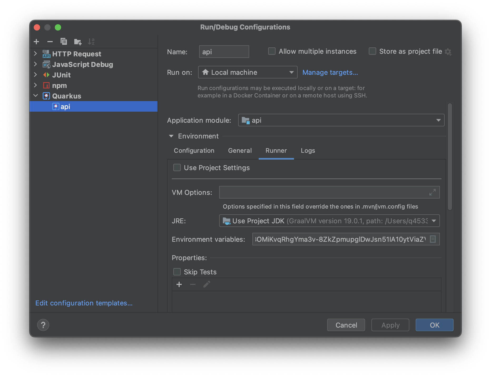
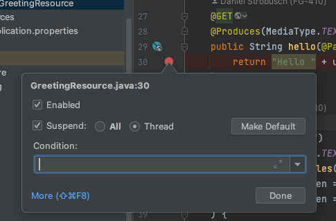
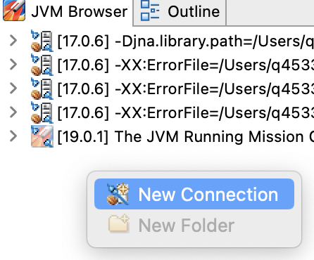
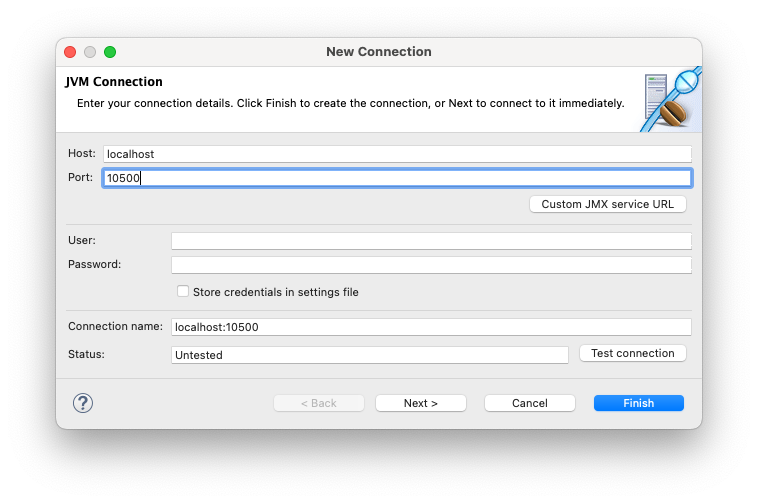
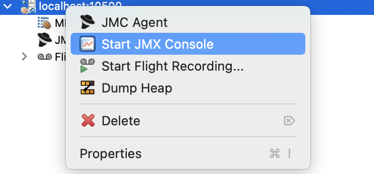
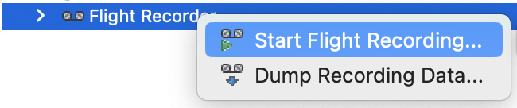
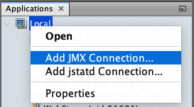
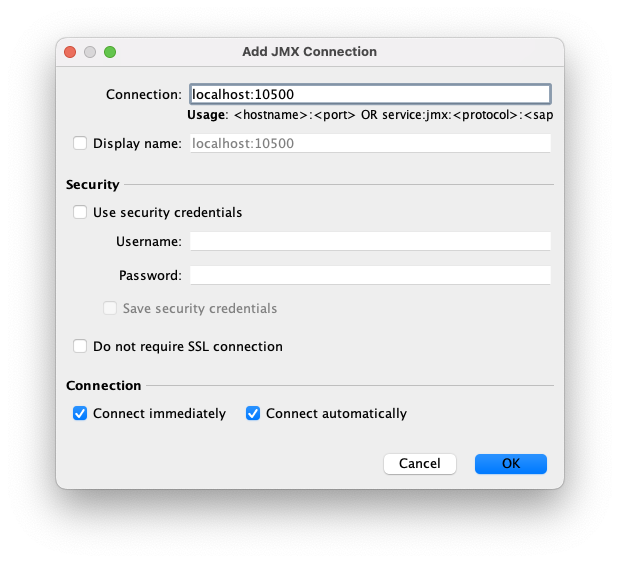
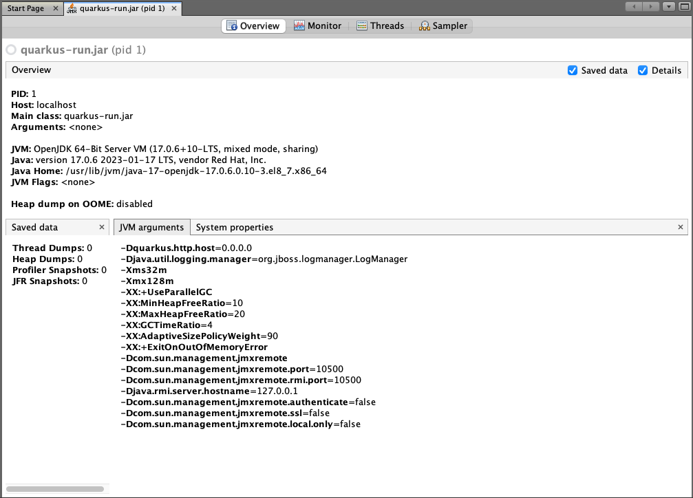

Table of Contents
JVM
The following sections describe diagnostic techniques for JVM based containers such as debugging and profiling.
Remote Debugging
To enable remote debugging, first prepare your application to expose the remote debugging port. Quarkus applications can be configured by setting the JAVA_OPTS_APPEND environment variable. Other JVM based applications may have different ways to configure the JVM argument.
api:
replicas: 1
env:
JAVA_OPTS_APPEND:
value: >
-agentlib:jdwp=transport=dt_socket,server=y,suspend=n,address=*:5005
💡 Scaling replicas to one, is a good idea to make sure you have only one pod running when debugging API calls via a REST interface. Otherwise, it is hard to know if the pod you are profiling will serve the request. There will be a performance impact on the running application. Debugging in the production environment is not recommended in general.
When the app is prepared for debugging as described above, find the pod name
export "POD=app-foo-api-5c484fd67c-9x9ll"
and forward the JMX port locally by running:
kubectl port-forward $POD 5005:5005
Next, switch to your IDE. The following instructions will show how to set up a remote debugging session in IntelliJ.
To make sure that the Java classes are in sync with the source code in the IDE, it is recommended to checkout the git revision that is deployed in the container.
Then create a new run configuration for remote debugging.

and start it in debug mode. Then set a thread breakpoint, where you want to start debugging.

🚨 It is very important to select Thread, which will only stop the current thread. When stopping all threads (default breakpoint), the container cannot respond to readiness and liveness probes. This will result in termination of that “ unhealthy” pod and the debugging session will stop after a short period of time.
To trigger the breakpoint, invoke the code by calling the REST endpoint, e.g. via Swagger UI. If everything worked, the IDE will stop at the breakpoint and the debugging session can begin.
Java Management Extensions (JMX)
JMX can be used to get detailed insight into a JVM. It includes observing the heap, garbage collection and many other JVM related data.
To enable JMX, first prepare your application. Quarkus applications can be configured by setting the JAVA_OPTS_APPEND environment variable. Other JVM based applications may have different ways to configure the JVM argument.
api:
replicas: 1
env:
JAVA_OPTS_APPEND:
value: >
-Dcom.sun.management.jmxremote
-Dcom.sun.management.jmxremote.port=10500
-Dcom.sun.management.jmxremote.rmi.port=10500
-Djava.rmi.server.hostname=127.0.0.1
-Dcom.sun.management.jmxremote.authenticate=false
-Dcom.sun.management.jmxremote.ssl=false
-Dcom.sun.management.jmxremote.local.only=false
💡 Scaling replicas to one, is a good idea to make sure you have only one pod running when profiling API calls via a REST interface in the int environment. Otherwise, it is hard to know if the pod you are profiling will serve the request. This does not apply to the prod environment, though. Profiling in prod is not recommended and if you need to do it make sure you have a full understanding of replicas and profiling.
The instructions are based on the more general article Monitoring Quarkus JVM Mode With Cryostat.
When the app is prepared as described above, find the pod name
export "POD=app-foo-api-5c484fd67c-9x9ll"
and forward the JMX port locally by running:
kubectl port-forward $POD 10500:10500
💡 You can also forward multiple ports if required: kubectl port-forward app-foo-api-5c484fd67c-9x9ll 8080:8080 10500:10500.
There are several clients to connect to the JMX port. JMC and VisualVM are two alternatives described in the next sections.
Java Mission Control (JMC)
Install JMC and open it. Next, connect to the JMX connection in the JVM Browser:

Enter the mapped port:

and open the JMC Console:

Profiling can be done, using the Flight Recorder. By starting a new

After stopping it and opening the dump, the method profiling data can be inspected in the analysis result.
Discussing details of Flight Recorder and JMC is beyond the scope of this section, consult the JDK Mission Control Docs for more information.
VisualVM
Install VisualVM locally. Before opening it, find out which JVM is in the container by running
kubectl exec $POD -- jinfo 1
Look for something like java.home=/usr/lib/jvm/java-17-openjdk-17.0.6.0.10-3.el8_7.x86_64 which will tell you which JDK to use.
Next, make sure you have the correct JDK available locally. Open the VisualVM with the correct JDK.
JAVA_HOME=/path/to/java_home/ visualvm
💡 It is important to use the same (major version and vendor) JVM locally for starting the Visual VM as used by the container application, otherwise you might see “not supported for this JVM” in Visual VM later on.
Add a new JMX connection to localhost:10500.
 
Open the new connection quarkus-run.jar (pid 1), which show some details already:

Checkout the Monitor and Threads tabs, which should give you some insight into your application.
The Sampler tab might not be available, depending on the JVM (see JMC for an alternative).